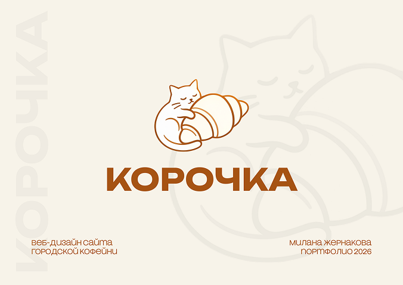
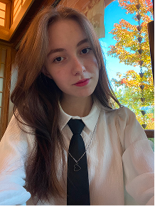
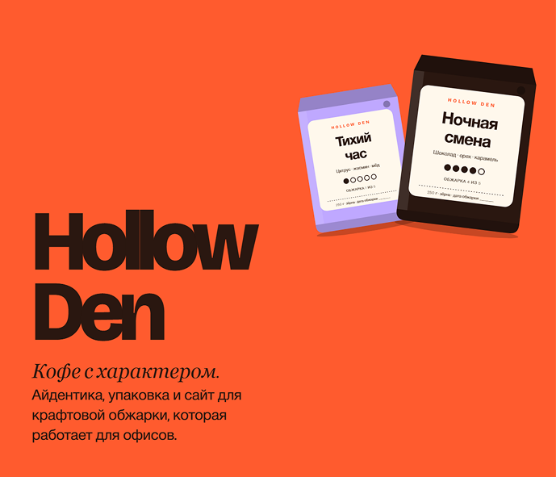
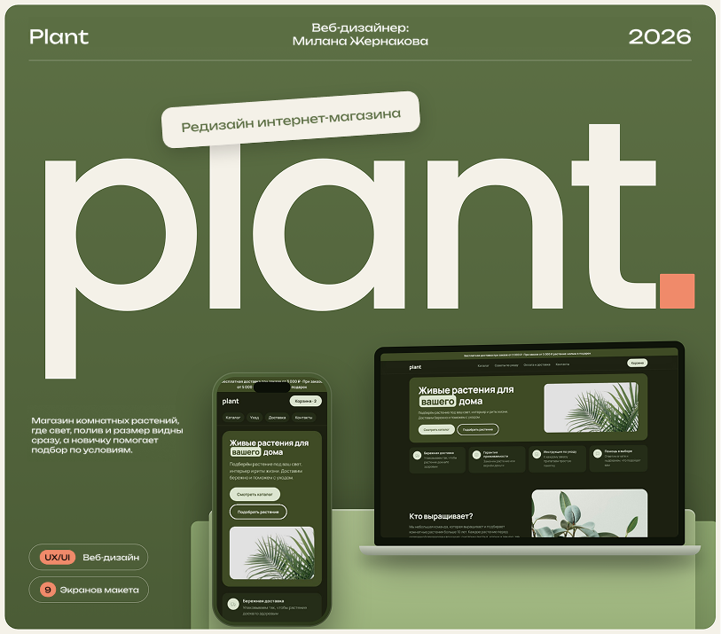

кофейня
сайт для городской
кофейни «корочка»

хелло! я милана, я веб-дизайнер (ux/ui). разрабатываю дизайн лендингов,
многостраничных сайтов и интернет-магазинов. знаю вёрстку —
проектирую с учётом того, как макет будет собран.

сайт для городской
кофейни «корочка»

сайт для крафтовой
обжарки кофе
«HOLLOW den»

редизайн интернет-
магазина комнатных
растений

узнаю цели сайта, аудиторию, сроки и ограничения, чтобы понять, какую задачу он должен решать.
01расставляю блоки и создаю черновой вариант по визуалу, продумывая логику страниц и путь пользователя.
02собираю палитру, шрифты и характер элементов в единый стиль и прорабатываю все экраны, состояния кнопок и форм и мобильную версию.
03готовлю макеты для разработчика и проверяю, что результат совпадает с макетом.
04